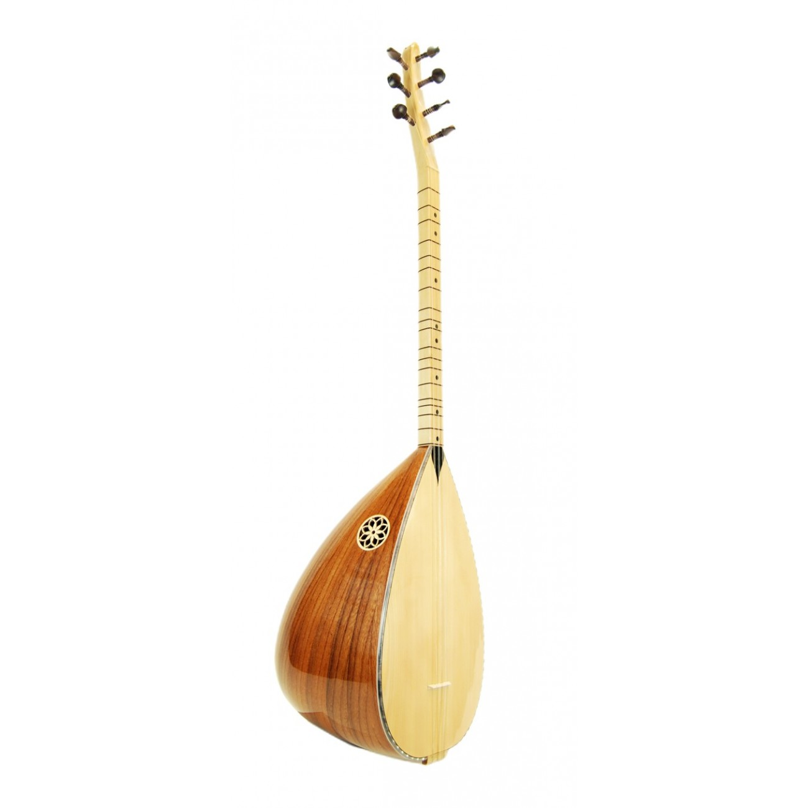

Bağlama

Bağlama ya da saz, Türk halk müziğinde yaygın olarak kullanılan telli tezeneli bir çalgı türüdür. Tezene denilen kiraz
ağacı kabuğundan yapılmış bir mızrapla tellere vurularak çalınır. Tekne bir kütükten oyulmuştur ve armut biçimindedir.
Kullanılan tekniğe göre mızrap (tezene) veya parmaklar ile çalınır. Parmaklarla çalma tekniğine şelpe ve dövme denir.
Genellikle altta iki çelik ile bir sırma bam, ortada iki çelik ve üstte bir çelik ile bir sırma bam teli olmak üzere toplam
7 tellidir. Tezene ile çalınır.
Bağlama Ailesi
Bağlama, kullanım amaçlarına göre farklı tür ve boylarda çalınmaktadır. Günümüzde genellikle aşağıdaki türlerle tanınır.

Cura (en küçük boy)
Çöğür (kısa kol bağlama)
Kısa saplı bağlama (yakın zamanda geliştirilmiş bir bağlama türü)
Uzun Sap Bağlama
Tambura (uzun kol bağlama)
Divan sazı (büyük boy bağlama)
Meydan sazı (en büyük boy bağlama)
Bağlama; Tekne, Göğüs ve Sap olmak üzere üç ana kısımdan oluşmaktadır. Tekne kısmı genelde dut ağacından yapılmaktadır.
Ancak dut ağacının dışında ardıç, kestane, ceviz, gürgen gibi ağaçlardan da yapılmaktadır. Göğüs kısmı ladin ağacından, sap
kısmı ise gürgen, ak gürgen veya ardıç ağacından yapılmaktadır.